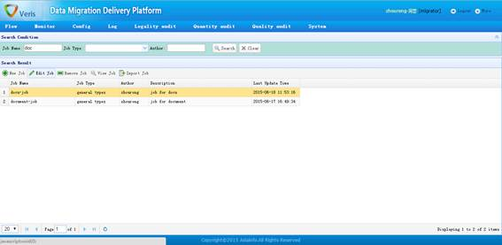
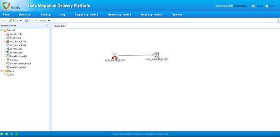
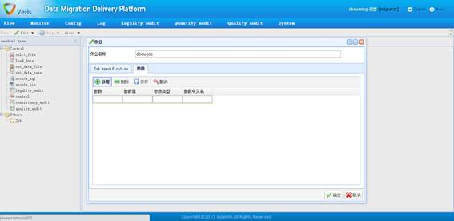

1、作业定义查询

作业定义查询页面
功能描述：
作业定义查询页面显示了当前所有作业的基本信息，用户可以在查询功能区中根据查询条件进行筛选。
选中某个作业，可以对该作业进行编辑、删除、查看等操作。
“导入作业”按钮，可以将按照程序要求格式填写的excel文档直接导入成为系统识别的作业，excel文档格式见********
2、具体作业编辑页面

具体作业编辑页面
功能描述：
从左侧控件列表中拖动需要的控件放入右侧空白区域；按住shift键并将鼠标在控件之间拖动来连接控件；删除控件或者控件间的连线可以在对象上右键，在弹出菜单中选择“remove task”。
3、作业级参数设置

作业级参数设置页面
功能描述：
作业级参数是指在整个作业范围内有效的变量，例如：作业中多个控件有用到了同一个数据库连接串，那么这个连接串就可以定义为一个作业级参数，这样可以减少连接串输入次数。
在作业编辑页面的空白处右键，选择“job setting”菜单；在弹出的参数设置页面中，可以通过点击“新增”、“删除”、“保存”、“取消”按钮来对参数个数和内容进行操作。
注意事项：
建议每一个参数都至少填写参数和参数值两项，虽然参数值未填写也能成功操作，但是系统会认为该参数的值为空，这不符合一般逻辑。